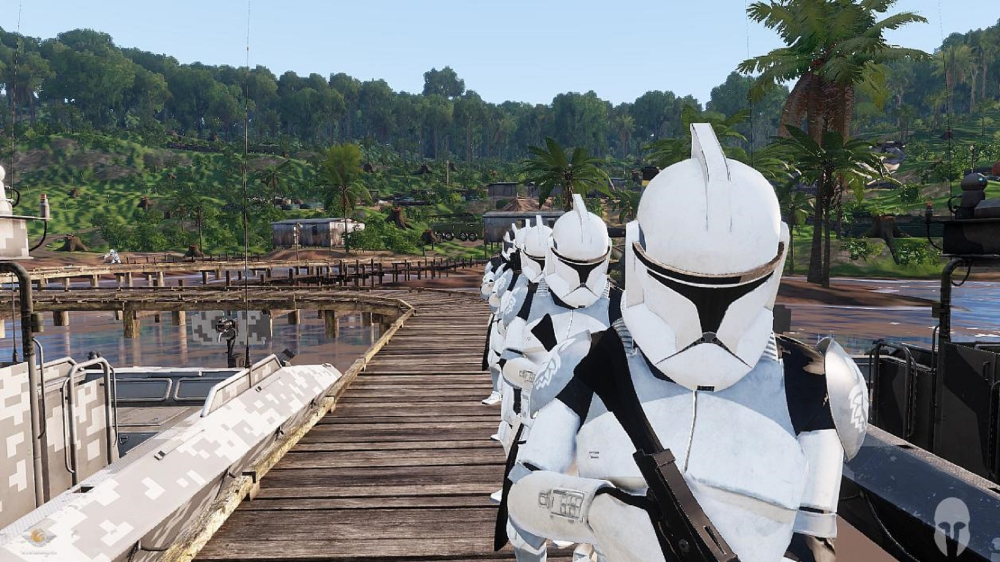
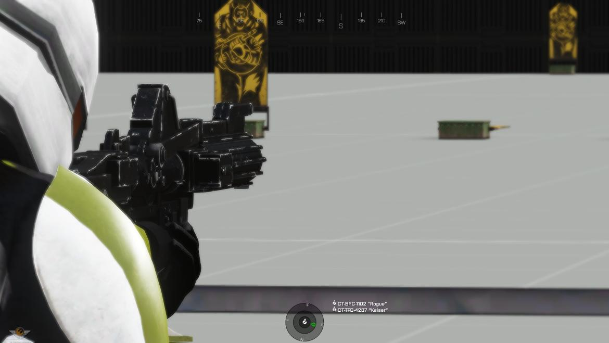
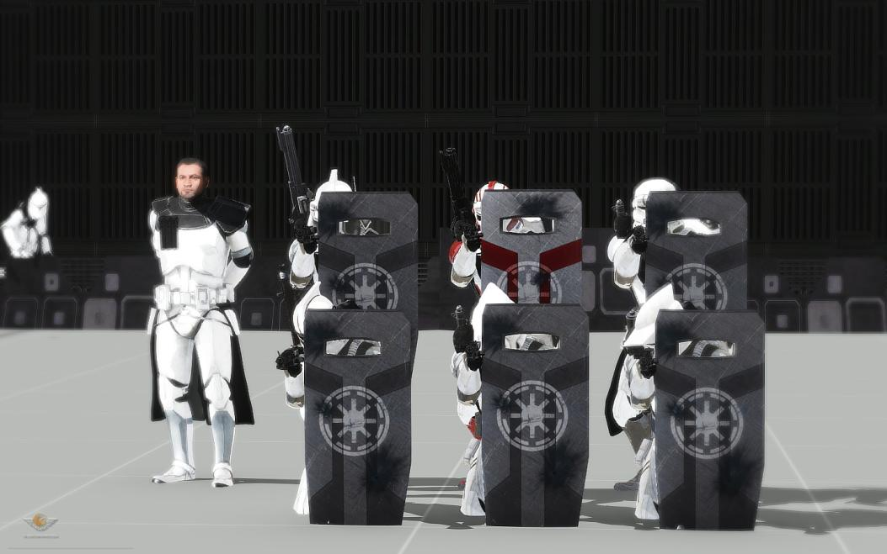

Welcome to the wolfpack
We're glad to have you
The 104th Battalion
We are the 104th Battalion. A group of Jangos finest operating under the command of CC-1919 Kal El.
We currently run a community of mature, relaxed gamers looking to join the SWOP starsim community. We aim to provide an experience grounded in lore, while utilizing real life tactics, organization, and procedures.
We have established ourselves to be a strong community, full of friends and family, and we would love if you joined us. 
What makes us special?
The 104th brings about a moderate degree of discipline and tactical realism. We heavily encourage troops to better themselves by attaining more certifications, learning new strategies, and gaining rank.
We have a heavy focus on squad play, and assign squads to capable leaders, rather than having a mess of people running about. We also have a heavy focus on operations that include:
- Large Scale Conventional Warfare
- Air Assault
- Defensive Operations
- Direct Combat
- Hostage Rescue
- Planetary Control Campaigns
- and more!
Training and Requirments
- Below are our requirements for joining the battalion:
- Must be 16+
- Must have a mature and professional attitiude
- Must be willing and able to follow the chain of command
- Must be able to make at least one unit event a week, unless outside reasons dictate
- Must be able to complete the training process in the required time frame
- Must maintain respect for others as well as yourself

×
What roles can I take in the 104th?
We offer a large range of certifications, as well as roles within our battalion. As you play, you will get chances to train in special weapons, or skills, which will allow you to utilize those weapons or skills in the field.
This allows you to move from a standard rifle man to a Z6 heavy gunner, a medic, a paratrooper, flame trooper, and more! We offer 18 different certifications, and 14 different roles within our unit.
Certifications
- Heavy Gunner
- Rocket Trooper
- Radio Telephone Operator
- Close Quarters Combatant
- Designated Marksman
- Jumptrooper
- Paratrooper
- Crewmnan
- Combat Life Saver
- Advanced Medical
- Grenadier
- Sapper
- Riot Control
- Sniper
- Advanced Rocket Trooper
- Combat Engineer
- Westar M5
- Flame Trooper
Roles
- Advanced Recon Commando (ARC)
- Advanced Recon Force (ARF)
- Aerial Enforcer
- Airborne
- Medic

×
- Pilot
- Join Terminal Air Controller (JTAC)
- Squad Leader
- Platoon Sergeant
- Platoon Medic
- Platoon Commander
- Company First Sergeant
- Company Executive
- Senior Medic
What is your schedule?
Monday: CO-NCO meeting
Tuesday: open (encouraged squad training)/CR Training
Wednesday: Side Mission(Campaign) 6pm est
Thursday: Open (encouraged squad training)/CR Training
Friday: FTX (Battalion Wide Training)
Saturday: Main Campaign Day
Sunday: Open
We also have random fun-ops and training scattered through out the week.